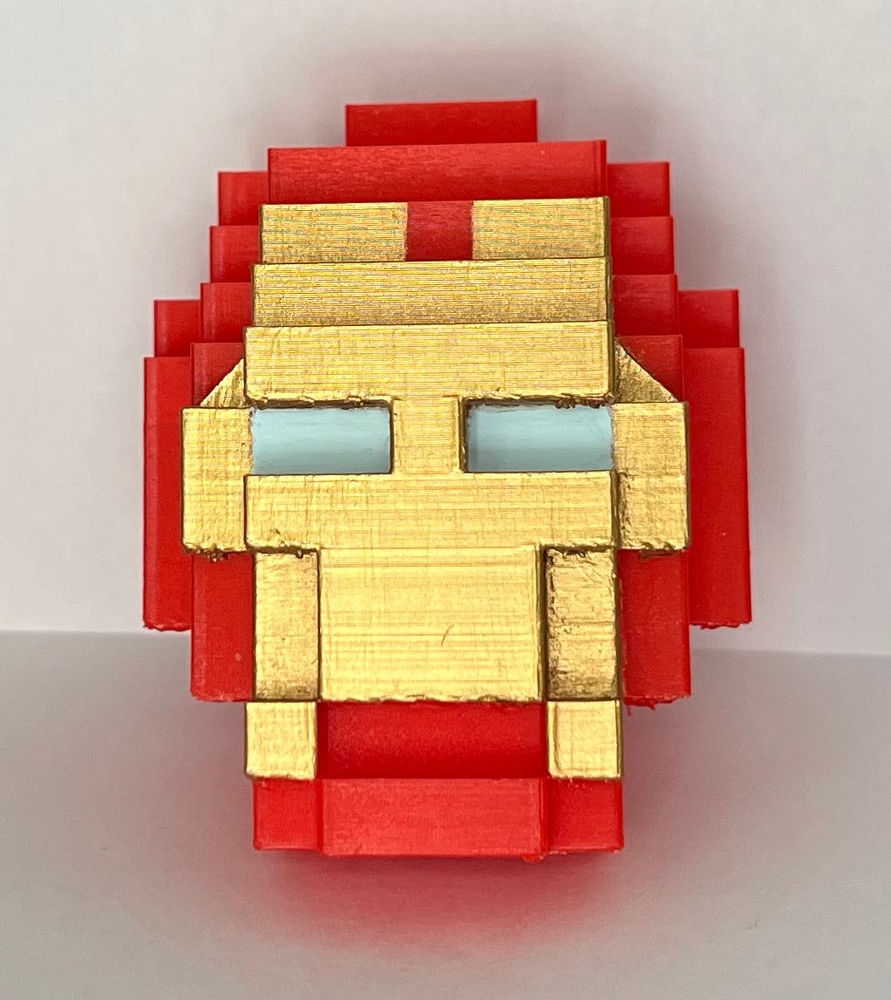

The objective of this project was to export the Minecraft Sculpture as an STL file and prepare it for a 3D Print using the printer's software by adding scaffolding where needed. A small print was first done as a draft to understand how the sculpture should be rebuilt, if it's needed. Then a final print was done much larger to show the details of the sculpture.
My final print of the Iron man helmet took almost 7 hours and came out to be about 3 inches tall. To finish the piece, I removed the scaffolding, filed down the rough edges, and painted it.
